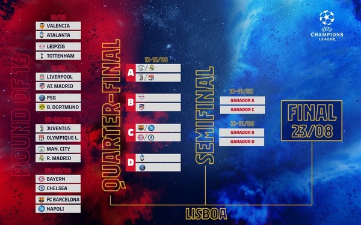

Formato |
|---|
Se clasigican los equipos de pendiendo el coeficiente de la UEFA de la liga en la que militan. Se pueden clasificar hasta 4 equipos de una misma liga, y el resto mediante eliminatorias previas. Hay una plaza reservada también para el ganador de la Europa League |
Una liguilla llamada fase de grupos, en la que se enfrentan 4 equipos entre sim ida y vuelta. Pasan los dos primeros, y el tercero se va hacia Europa League. Por ultimo hay un sorteo para decidir los octavos y los cuartos de final, y una tabla que marca que ganadores de cuartos se enfrentaran en semifinales y en la final. |
 |